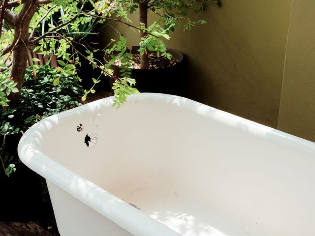
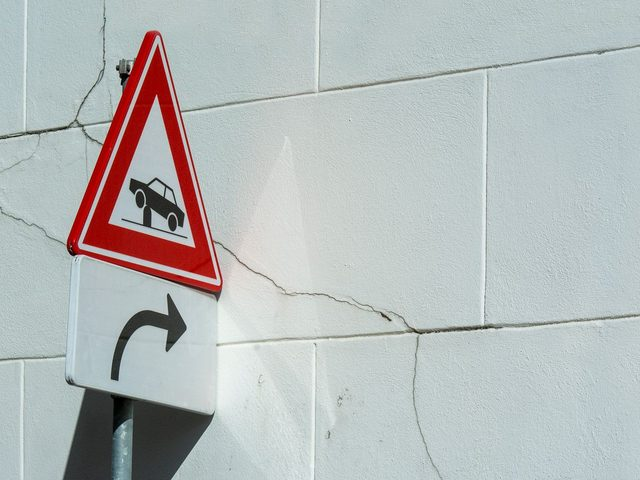
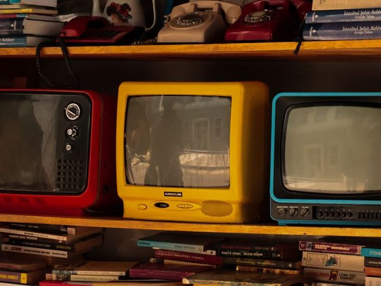

VOCABULARY · WORD UP 單字複習 UNIT 50
T-IV．T 開頭（四）
WORD UP「T-IV」的 34 個字（T-shirt 到 typhoon）。紅色＝要複習，藍色標籤＝WORD UP 標熟記、還要在這裡考對。
共 34 個單字．點 🔊 聽發音
1T-shirtn.
T 恤
I bought a white T-shirt.我買了一件白 T 恤。
2trapn./v.
陷阱；困住
過去式 trapped
The mouse was caught in a trap.老鼠被捕鼠器抓到了。

3trashn.
垃圾
不可數；trash can 垃圾桶
Put the trash in the trash can.把垃圾丟進垃圾桶。
4travelv./n.
旅行
travel to + 地點
I want to travel around the world.我想環遊世界。

5treasuren.
寶藏
The pirates found the treasure.海盜找到了寶藏。
6treatv./n.
對待；請客
It's my treat. 我請客
Don't treat me like a child.不要把我當小孩子。
7treatmentn.
治療；對待
He is getting treatment at the hospital.他正在醫院接受治療。

8treen.
樹
There is a big tree in the yard.院子裡有一棵大樹。
9trialn.
試用；審判
You can use the app for a free trial.你可以免費試用這個應用程式。

10trianglen.
三角形
A triangle has three sides.三角形有三個邊。
11trickn.
把戲；詭計
Trick or treat! 不給糖就搗蛋
My dog can do tricks.我的狗會表演把戲。
12tripn.
旅行
take a trip
We took a trip to Kenting.我們去墾丁旅行。
13troublen.
麻煩；困難
be in trouble 有麻煩
You'll be in trouble if you're late.你遲到就麻煩了。

14trousersn.
長褲
一定用複數
These trousers are too long.這條長褲太長了。

15truckn.
卡車
A big truck is on the road.路上有一輛大卡車。
16trueadj.
真的；真實的
come true 實現
I hope your dream comes true.希望你的夢想成真。

17trumpetn.
小喇叭
play the trumpet
He plays the trumpet in the band.他在樂隊吹小喇叭。
18trustv./n.
信任
I trust you.我信任你。
19truthn.
真相；事實
tell the truth 說實話
Please tell me the truth.請告訴我實話。
20tryv./n.
嘗試；試
try to V 努力；try + V-ing 試試看
Try this cake. It's great.試試這個蛋糕，很好吃。

21tubn.
浴缸；桶
The baby is in the tub.寶寶在浴缸裡。
22Tuesdayn.
星期二
I have piano class on Tuesday.我星期二有鋼琴課。
23tummyn.
肚子（口語）
= stomach
My tummy hurts.我肚子痛。

24tunneln.
隧道
The train went into a tunnel.火車開進隧道。

25turkeyn.
火雞
Turkey 大寫是土耳其
We eat turkey on Thanksgiving.我們感恩節吃火雞。

26turnv./n.
轉；輪流
It's your turn. 輪到你了
It's your turn.輪到你了。

27turtlen.
烏龜
The turtle walks slowly.烏龜走得很慢。

28TVn.
電視
watch TV
Don't watch TV too long.電視不要看太久。

29twelven.
十二
twelfth 第十二
There are twelve months in a year.一年有十二個月。
30twentyn.
二十
twentieth 第二十
I have twenty dollars.我有二十元。
31twiceadv.
兩次；兩倍
twice a week 一週兩次
I go swimming twice a week.我一週游泳兩次。
32twon.
二
I have two cats.我有兩隻貓。
33typen./v.
類型；打字
What type of music do you like?你喜歡哪種類型的音樂？
34typhoonn.
颱風
School is closed because of the typhoon.因為颱風停課了。
FOCUS
重點整理
| 說法 | 中文 | 例子 |
|---|---|---|
| try to V / try + V-ing | 努力做 ／ 試試看做 | try to win ／ try eating it |
| tell the truth | 說實話 | Always tell the truth. |
| come true | 實現 | My wish came true. |
| be in trouble | 有麻煩 | He is in trouble. |
| It's my treat. | 我請客 | Lunch is my treat. |
| It's your turn. | 輪到你 | Now it's your turn. |
| once / twice / three times | 一次 ／ 兩次 ／ 三次 | twice a day |
trousers、jeans、pants 一定用複數；trash 不可數。